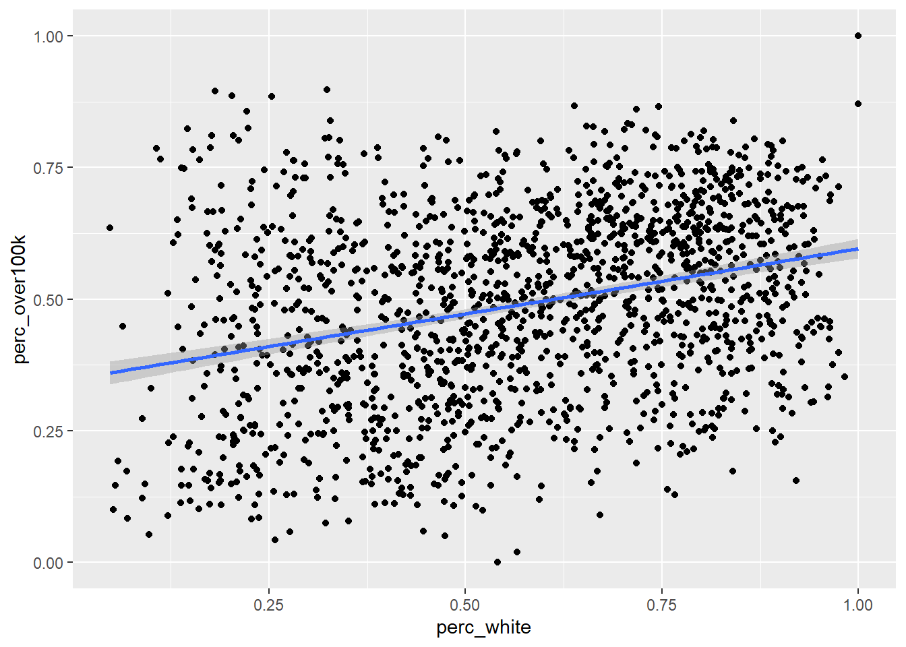

3.5 Multiple regression
In principle, multiple regression merely adds additional independent variables to the same math we’ve done before, but since this causes the model to no longer be viewable in a two-dimensional scatter plot, it feels more substantively different than it should. If you boil down the difference to additional mx terms in y = mx + b, then this jump in dimensionality should feel much more manageable. Let’s go ahead and expand on the analyses we did of income and race at the CBG level. Let’s add one more independent variable: education attainment (% with higher than a high school degree):
library(tidyverse)
library(censusapi)
Sys.setenv(CENSUS_KEY="c8aa67e4086b4b5ce3a8717f59faa9a28f611dab")
acs_vars_2018_5yr <-
listCensusMetadata(
name = "2018/acs/acs5",
type = "variables"
)bay_multiple_tract <-
getCensus(
name = "acs/acs5",
vintage = 2018,
region = "tract:*",
regionin = "state:06+county:001,013,041,055,075,081,085,095,097",
vars = c(
"B19001A_001E",
"B19001_001E",
"B19001_014E",
"B19001_015E",
"B19001_016E",
"B19001_017E",
"B15003_001E",
"B15003_021E",
"B15003_022E",
"B15003_023E",
"B15003_024E",
"B15003_025E"
)
) %>%
transmute(
tract = paste0(state, county, tract),
perc_white = B19001A_001E / B19001_001E,
perc_over100k = (B19001_014E + B19001_015E + B19001_016E + B19001_017E) / B19001_001E,
perc_collegedegree = (B15003_021E + B15003_022E + B15003_023E + B15003_024E +B15003_025E) / B15003_001E
) %>%
filter(
!is.na(perc_white),
!is.na(perc_over100k),
!is.na(perc_collegedegree)
)So at this point, the modified question could be: to what degree does information about BOTH race and educational attainment in a neighborhood tell us something about income? This can no longer be viewed on one scatter plot. One useful visualization tool that becomes useful once we are dealing with multiple variables is a correlation plot, which can be done in Excel, and in R is available through a number of packages, like corrplot (install with install.packages("corrplot") if using for the first time):
library(corrplot)
correlationplot <- bay_multiple_tract %>%
select(
perc_white,
perc_collegedegree,
perc_over100k
) %>%
cor()
corrplot(
correlationplot,
method = "number",
type = "upper"
)
There are many possible parameters to customize the visualization, but what I’ve shown above is the essential information. Note that the numbers are correlation coefficients, which are R-squared without the square, which you’ll recall from earlier this chapter is a measure of the amount of variance one variable shares with the other. The “1” values are self-evident as you are pairing a variable with itself. So the only other numbers are the results of the unique possible pairings. At this scale, we are treating any of these pairs as valid to evaluate, and agnostic about what we might ultimately treat as the “independent” vs. “dependent” variables (which is great to keep in mind as completely arbitrary, since we can make no claims of causality here). All of these numbers are positive, which is to say that increases in any one variable are associated with increases in the others (this was also an arbitrary consequence of the specific variables we designed; if we had switched perc_white with perc_nonwhite, we’d see some negative, red numbers in this plot). The correlation coefficient between perc_white and perc_over100k is 0.3; if we take the square of this, we get 0.09, which matches the R-squared from the first lm() output in Section 3.3. Note that the correlation coefficient between perc_collegedegree and perc_over100k is quite a bit higher, which means we’d expect the scatter plot between these two variables to have a tighter fit around the regression line:
ggplot(
data = bay_multiple_tract,
aes(
x = perc_collegedegree,
y = perc_over100k
)
) +
geom_point() +
geom_smooth(method = "lm")
##
## Call:
## lm(formula = perc_over100k ~ perc_collegedegree, data = bay_multiple_tract)
##
## Residuals:
## Min 1Q Median 3Q Max
## -0.64953 -0.07013 0.00630 0.08189 0.36997
##
## Coefficients:
## Estimate Std. Error t value Pr(>|t|)
## (Intercept) 0.124887 0.008349 14.96 <2e-16 ***
## perc_collegedegree 0.674771 0.014407 46.84 <2e-16 ***
## ---
## Signif. codes: 0 '***' 0.001 '**' 0.01 '*' 0.05 '.' 0.1 ' ' 1
##
## Residual standard error: 0.1178 on 1575 degrees of freedom
## Multiple R-squared: 0.5821, Adjusted R-squared: 0.5818
## F-statistic: 2194 on 1 and 1575 DF, p-value: < 2.2e-16Keep in mind that the slope of the line (what we might call the “effect size”) is a distinct concept from R-squared which is a measure of correlation. These don’t have to do anything with each other. What a high correlation coefficient and R-squared value tell you is that residual errors are low; what a steep slope tells you is that large changes in x are associated with large changes in y. In this case, education seems to have better predictive power (on income) compared to race, and it also predicts larger changes (in income) compared to race.
For ease of comparison with what follows, I’ll reproduce the scatter plot and lm() output for the original pairing of perc_white and perc_over100k from Section 3.3:
ggplot(
data = bay_multiple_tract,
aes(
x = perc_white,
y = perc_over100k
)
) +
geom_point() +
geom_smooth(method = "lm")
##
## Call:
## lm(formula = perc_over100k ~ perc_white, data = bay_multiple_tract)
##
## Residuals:
## Min 1Q Median 3Q Max
## -0.48224 -0.13429 0.00815 0.12613 0.50205
##
## Coefficients:
## Estimate Std. Error t value Pr(>|t|)
## (Intercept) 0.34838 0.01202 28.99 <2e-16 ***
## perc_white 0.24765 0.01952 12.69 <2e-16 ***
## ---
## Signif. codes: 0 '***' 0.001 '**' 0.01 '*' 0.05 '.' 0.1 ' ' 1
##
## Residual standard error: 0.1735 on 1575 degrees of freedom
## Multiple R-squared: 0.09276, Adjusted R-squared: 0.09218
## F-statistic: 161 on 1 and 1575 DF, p-value: < 2.2e-16Now let’s see the results of lm() with both race and education used as independent variables. All this entails is linking the two variables together with + on the right side of ~:
##
## Call:
## lm(formula = perc_over100k ~ perc_white + perc_collegedegree,
## data = bay_multiple_tract)
##
## Residuals:
## Min 1Q Median 3Q Max
## -0.64807 -0.07006 0.00552 0.08103 0.37100
##
## Coefficients:
## Estimate Std. Error t value Pr(>|t|)
## (Intercept) 0.122948 0.009702 12.672 <2e-16 ***
## perc_white 0.005654 0.014398 0.393 0.695
## perc_collegedegree 0.672364 0.015661 42.932 <2e-16 ***
## ---
## Signif. codes: 0 '***' 0.001 '**' 0.01 '*' 0.05 '.' 0.1 ' ' 1
##
## Residual standard error: 0.1178 on 1574 degrees of freedom
## Multiple R-squared: 0.5821, Adjusted R-squared: 0.5816
## F-statistic: 1096 on 2 and 1574 DF, p-value: < 2.2e-16Let’s inspect the (potentially surprising) results, in comparison with the previous two lm() outputs:
- While the regression coefficient (which we’ve called “slope” previously, but since we can’t visualize this in a two-dimensional chart anymore, it’s better to reframe as just a coefficient you multiply
xby) ofperc_whitewas 0.25 when it alone was compared withperc_over100k. But now, alongsideperc_over100k, its coefficient has effectively become 0. That is to say that, “controlling for education”, there appears to be no association between race and income. Again, no causal claims here; perhaps there is actually a big causal mechanism here, but some other causal mechanism has an equal and opposite effect. We’re merely making claims about the shared variation in observations, and in this case, multiple observations. Also note that there are no asterisks in theperc_whiterow, so there is no longer sufficient evidence to reject the null hypothesis on the relationship between race and income (when controlling for education). - The regression coefficient for
perc_collegedegreeon its own was virtually the same as it was when combined withperc_white. The effect of addingperc_whitewas to reduce the effect size slightly. So, we could say that, “controlling for race”, education appears to still be positively associated with income, to essentially the same degree. R-squaredforperc_whiteon its own as an independent variable was 0.09, andR-squaredforperc_collegedegreeon its own was 0.58.R-squaredfor both independent variables combined was… also 0.58. Usually you’d expect to see an increase; in fact, you can ONLY maintain or increaseR-squared(which is to say, reduce residuals), because at its worst, a new independent variable can simply have a regression coefficient of 0 and have no effect size. Essentially,perc_whitehas been demoted to this position, which is to say that whatever explanatory power race had is virtually entirely coinciding with the explanatory power of education (an analogy would be that a sundial tells time, and a wristwatch tells time better, and if you have both, a sundial is virtually useless). The other clue we had of this result was the other correlation coefficient from the correlation plot, which was 0.39 between the two independent variables. If your independent variables are correlated, then they’ll share some amount of explanatory power (which is whyR-squaredis usually less than the sum of itsR-squaredparts).
This kind of evaluation is worth doing on any combination of independent variables. You might wonder: if I can just keep adding independent variables and get higher and higher R-squared, why don’t I just use every single possible CBG variable I can get from the ACS? And you would have re-invented machine learning, which does essentially that (often described as “throwing everything in the kitchen sink”). The benefit is predictive capability (i.e. reduction of residual errors), but the cost is interpretability of the regression coefficients (“slopes”) of individual variables, which can go haywire from a mathematical perspective if you include too many similar variables. As a rule of thumb for non-machine-learning applications, where you want the story of the regression analysis to be meaningful to stakeholders, the goal should be to have just a handful of independent variables, each as uncorrelated with each other as possible, which is to say they likely represent distinct dimensions of characteristics about a population that all seem to “explain” something about the outcome. As you add each additional independent variable to the multiple regression, look for non-negligible change in R-squared; if there is no change, that additional independent variable is probably not worth adding. There are advanced techniques (like “stepwise regression”) you can pick up to help with the search process for good independent variables, but often intuition and literature review are your best tools.